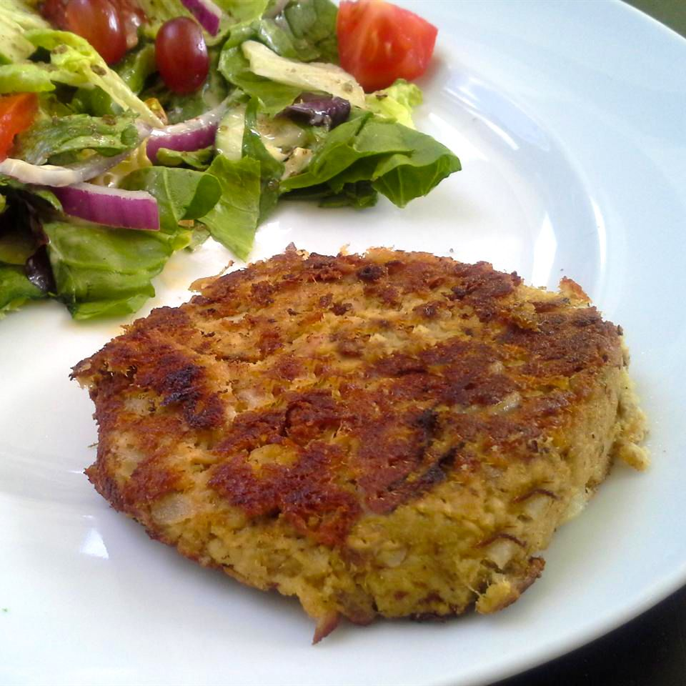

Spicy Tuna Fish Cakes

The cooked fish cakes!
Ingredients:
- 1 large potato, peeled and cubed
- 4 (3 ounce) cans tuna, drained
- ¼ cup chopped onion
- 1 egg
- 1 tablespoon Dijon mustard
- 1 tablespoon dry bread crumbs, or as needed
- 1 ½ teaspoons garlic powder
- 1 teaspoon Italian seasoning
- ¼ teaspoon cayenne pepper
- salt and ground black pepper to taste
- 1 tablespoon olive oil
Steps:
- Place potato into a small pot and cover with salted water.
Bring to a boil over high heat,
then reduce the heat to medium-low,
cover, and simmer until tender, about 20 minutes.
Drain and allow to
steam dry in the pot for 1 to 2 minutes. Transfer to a large bowl and
mash with a potato masher or fork.
- Add tuna, onion, egg, mustard, bread crumbs, garlic powder, Italian
seasoning, cayenne
pepper, salt, and pepper and mix until well blended.
Divide tuna mixture into eight equal
portions and shape into patties.
- Heat olive oil in a skillet over medium heat. Add tuna patties and
pan-fry until browned
and crisp, about 3 minutes per side.
Home